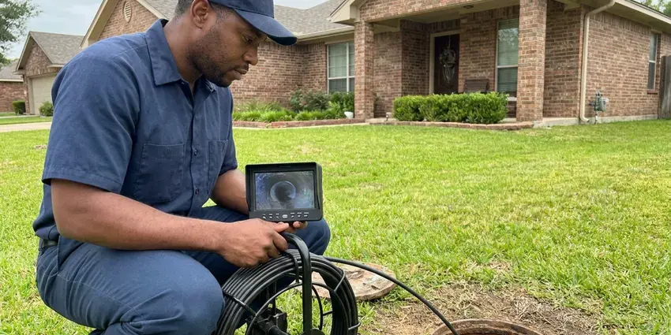

Sump Pump Maintenance in Miami Beach, FL
A pump that hums but does not move water is a pump on its way out. HDF Plumbing catches that in Miami Beach, FL well before storm season.
- Work Backed by Warranty
- Pit Cleanout Included
- Flat, Upfront Pricing
- Pre-Storm Checkups

Get Your Sump Pump Ready for Storms in Miami Beach, FL
A quick bucket test now beats a wet basement at 2 a.m.
Sump Pump Maintenance in Miami Beach, FL by HDF Plumbing
HDF Plumbing starts every sump pump visit in Miami Beach, FL with the parts that fail most often, which are the float switch and the check valve. We fill the pit with a hose. Then we time how fast it drains and listen to the motor.
Work we handle every week:
- Float switch replacement and repair
- Float switch tests with real water
- Battery and water-powered backup service

Additional Plumbing Maintenance Services in Miami Beach, FL
Our maintenance and specialty plumbing services in Miami Beach, FL catch small problems before they become emergencies.


Customers
Why Choose HDF Plumbing for Sump Pump Maintenance in Miami Beach, FL?
Gravel, silt, sand and dried leaves settle in the pit during a long dry spell. Usually a bucket or two. We scoop it out before the pump can pull it into the impeller. Worn parts get swapped the same day, so there is no second trip and no waiting on parts with rain coming.
- Backup Systems, We load test backup batteries and swap out tired ones before the wet months.
- Ready for Storms, When severe weather is in the Miami Beach forecast, you already know the pump runs.
- Foundation Protection, Moving groundwater out of the pit relieves pressure on the foundation walls and keeps saturated soil from shifting the footings.
Citywide Coverage
Finished basements, older crawlspaces and below-grade garages all show up on our schedule in Miami Beach. If water gathers below grade, we can service the pump that clears it.
Experienced Team
Every plumber on our crew carries a clamp meter and knows what a healthy amp reading looks like for a 1/3 or 1/2 horsepower pump. The meter says more than the noise ever will.
Safety-First Approach
Our plumbers follow local plumbing and electrical codes in Miami Beach, FL, which cover how the pump is wired, where the discharge can go and how the pit is covered. Code problems get fixed before we pack up.
Trusted Certified Miami Beach Plumbing Services Professionals
At HDF Plumbing, we are proud to offer certified plumbing services throughout Miami Beach, FL. Those papers on the wall mean something. Every repair, install and maintenance visit follows strict safety and quality rules, and the plumbers doing the work carry recognized industry credentials.
Call Us Now PHCC Plumbing Contractor Recognition
PHCC Plumbing Contractor Recognition Better Business Bureau (BBB) Accreditation
Better Business Bureau (BBB) Accreditation Angi Certified Pro
Angi Certified Pro ISO 9001 Quality Management Certification
ISO 9001 Quality Management CertificationSump Pump Maintenance in Miami Beach, FL Before Storm Season
Discharge Line and Check Valve Service in Miami Beach
The check valve sits on the discharge pipe a foot or so above the pump and keeps the water in the line from falling back into the pit. When it fails, the pump pumps the same water twice. Motors wear out faster. Our plumber tests the valve, confirms there is a weep hole below it to prevent air lock, and checks each joint to the wall.

Home Sump Pump Maintenance in Miami Beach
A typical house pit is about 18 inches across and two feet deep, and most of what goes wrong happens inside it. We pull the pump, clear the intake screen and scoop out the silt. Then we run a full water test. Nearly all homes in Florida sit on concrete slabs over sandy soil, so leaks under the slab are a frequent and costly repair.
Emergency Sump Pump Repair in Miami Beach
A pump that runs nonstop, hums without moving water or will not start at all needs a plumber the same day, before the pit overflows. We send a plumber with floats, check valves and spare pumps on the truck. A jammed impeller usually clears in a few minutes. A burned motor means we swap in a new pump on the spot and leave the pit protected.
Commercial Building Sump Pumps in Miami Beach, FL
Parking garages, mechanical rooms and loading docks often drain to large pits with pumps rated at a horsepower or more. Those units need more frequent checks than a house pump. Our crew tests the controls, the alarm panel and each pump in a duplex station, and records amp draw every visit so a slow decline gets caught. Downtime costs money.
Submersible Sump Pump Service in Miami Beach
Submersible pumps sit at the bottom of the pit, which keeps them quiet but hides the problems. Our plumber pulls the unit out so we can see the cord and the shaft seal. A cracked cord usually means a new pump. The intake screen gets cleaned, and we look over the housing for corrosion, since pumps sitting in standing water for years rust from the bottom up.
Check Valve and Discharge Pipe Repair in Miami Beach, FL
A bad check valve can nearly double how often the pump starts. Each start heats the motor windings. Our plumbers replace worn valves with quieter spring-loaded types and check the pipe for cracks and loose couplings out to where it leaves the house. The water should exit well away from the slab or foundation so it does not soak back toward the pit.
Battery Backup System Testing in Miami Beach, FL
Storms knock out power when the pit fills fastest. That is the moment a backup pump earns its keep. Our plumber reads the battery date, cleans corrosion off the terminals and tests the charger, because a failed charger can leave the battery flat within a season.

Emergency Sump Pump Diagnostics in Miami Beach, FL
Grinding, clicking and a hum with no water moving each point to a different failure. Our plumber works from the outlet and cord to the float and then the motor. Often it is just a tripped GFCI or a hung float. A seized motor calls for a new pump, so we carry replacements and never leave the pit unprotected overnight.
Sump Pump Maintenance Near Me in Miami Beach, FL
Water pools in predictable places around a house: the downspout corners, the low side of the yard and wherever the grade slopes back toward the wall. Our plumber checks those spots on the walk out to the discharge line. Small grading fixes help the pump.
Call volume for sump pumps jumps the day after a forecast calls for heavy rain. Book early and you skip that rush. In Miami Beach we usually get to a home within a day or two, and a dead pump gets seen even sooner.
HDF Plumbing at a Glance
- Fully licensed plumbing team covering Miami Beach, FL
- 24/7 emergency service with same-day scheduling
- Clear written estimates, no hidden fees
- 4.9-star rated by 739+ Florida customers
Miami Beach Map
Miami Beach Information
- Population
- 79,607
- Area codes
- 305/786/954
- Service area
- Miami Beach and communities within 40 miles
- Nearby
- Miami, North Miami, Hialeah, Miami Gardens
After a major storm, homes on wells or septic should be checked before normal use, since floodwater can foul both systems. Below-grade rooms in Miami Beach, FL stay dry only as long as the pump starts.
Expert Services
Call HDF Plumbing for reliable plumbing work done by licensed pros in Miami Beach, FL.
Our Specialized Plumbing Services in Miami Beach, FL
At HDF Plumbing, we handle the full list of plumbing services across Miami Beach, FL. We go from leak detection all the way to full system installations, for homes and commercial buildings, and we do it quickly at a fair price. Take a look at our core services below:


How Sump Pump Maintenance Works in Miami Beach, FL
Most visits take about an hour. Here is where that time goes.
Request a Quote
Call (904) 925-7356 or use the online form, and tell us where the pit is and whether you have a backup pump. We give you a clear price and a time that works.
On-Site Inspection
Your plumber arrives at your Miami Beach home and starts with the outlet, cord and plug. Then we look over the pit, the pump and the float.
Thorough Cleaning
We pull the pump, scoop out the basin and rinse the intake screen and impeller. A clean intake keeps the pump from clogging.
Frequently Asked Questions About Sump Pump Maintenance in Miami Beach
A standard inspection and cleaning usually runs $125 to $250. A new float switch or check valve adds about $75 to $250, depending on parts.
Zoeller, Wayne, Little Giant, Liberty and Flotec are the brands we see most in Miami Beach homes, and we service all of them. Each brand has its own weak spots, and our crew knows them.
Yes, our standard maintenance covers the battery backup if you have one. We load test the battery and confirm the charger is working.
Grinding, rattling, nonstop running, a pump that will not start, rust on the housing or damp spots on the floor near the pit. Any one of those is worth a visit before the next storm.
Not every house needs one. Homes with basements, crawlspaces, below-grade garages or low lots are the ones that usually do. After a major storm, homes on wells or septic should be checked before normal use, since floodwater can contaminate both systems.
Most local codes prohibit sump discharge into the sanitary sewer, since storm water can overload treatment plants. We route it to the yard, a dry well or another approved spot.
Our crew services Zoeller, Liberty, Wayne, Little Giant, Superior and most other residential and commercial pumps. We can also size an upgrade for a pit that cannot keep up.
Around Miami Beach, flushing the water heater yearly and descaling tankless units helps keep mineral buildup under control. In hard-water areas, scale builds up on the impeller, the float rod and the basin walls. Given a few years, the buildup slows the pump and can stick a vertical float so the pump never kicks on. Cleaning it off is part of every visit.
What Our Customers Say About Our Plumbing Experts

Sofia M.
Two new toilets went in during one visit. The tech set them on new wax rings and swapped the old supply lines. He also noticed our bathroom faucet dripping and replaced the cartridge while he was there. No mess left behind.
Toilet Installation · Miami Beach, FL
Carlos V.
Our house still had galvanized pipe, and upstairs the shower was a trickle. The crew repiped everything in PEX over three days and patched every drywall hole before they left. The pressure difference is night and day.
Repiping · Miami, FL
Megan L.
Our upstairs tub drained so slowly that every shower turned into a bath. HDF Plumbing pulled a wad of hair out of the stopper and then snaked the line past the trap. Three months later it still drains fast.
Drain Cleaning · Miami Gardens, FL
Paul B.
Our pit pump ran nonstop even in dry weather. The plumber found the check valve was stuck open, so the same water kept cycling back into the pit. New valve, new float switch, done in an hour. It runs quiet now.
Sump Pump · Hialeah, FLJessica T.
We were adding a gas range in a kitchen remodel and needed a new line run from the meter. The plumber pulled the permit, ran the pipe through the crawl space, and had it inspected and approved within the week.
Gas Line Repair · Coral Gables, FLMonica A.
Our water bill nearly doubled in one month with no change in how we used water. The tech checked the meter, heard the leak under the hallway with his equipment, and opened a hole about a foot square. Fixed the same day.
Slab Leak Repair · Hialeah, FL